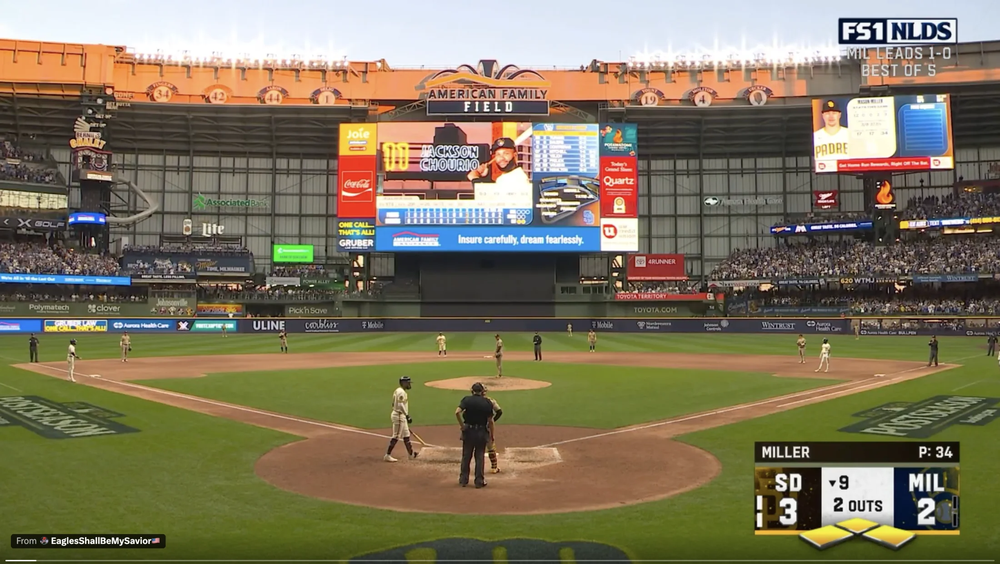
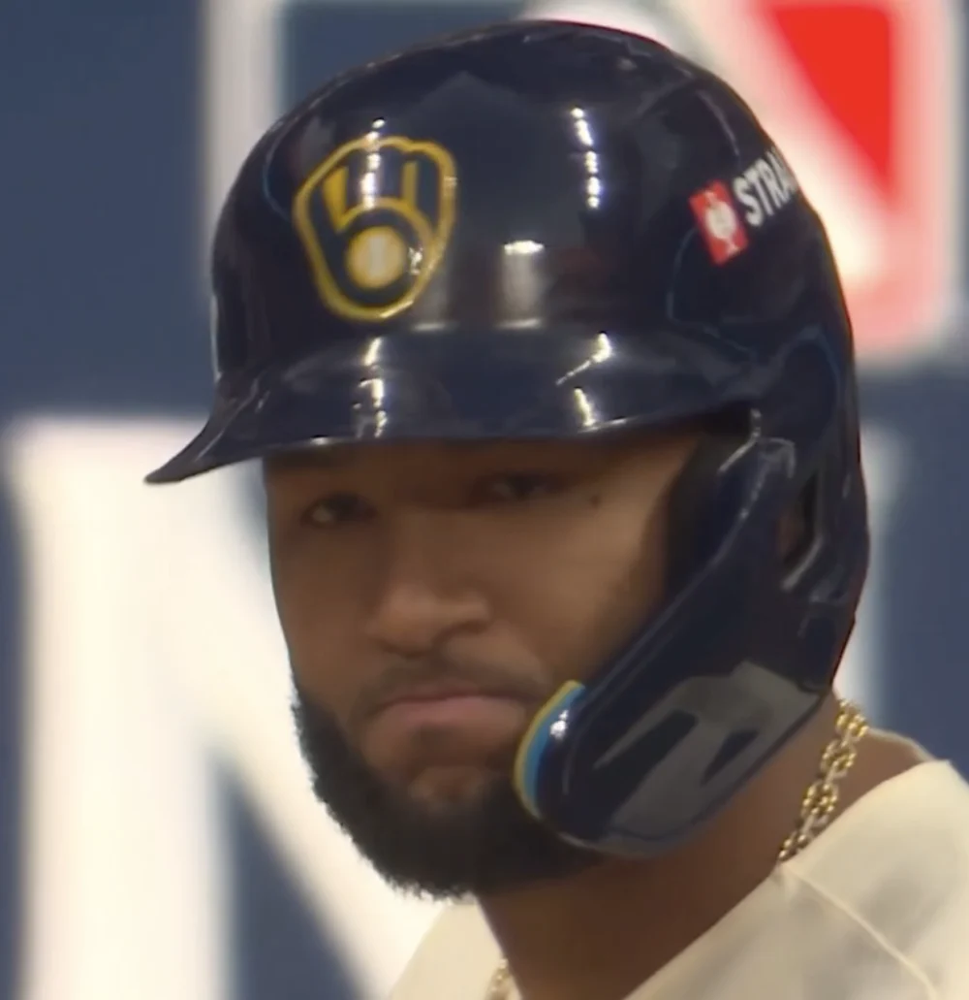
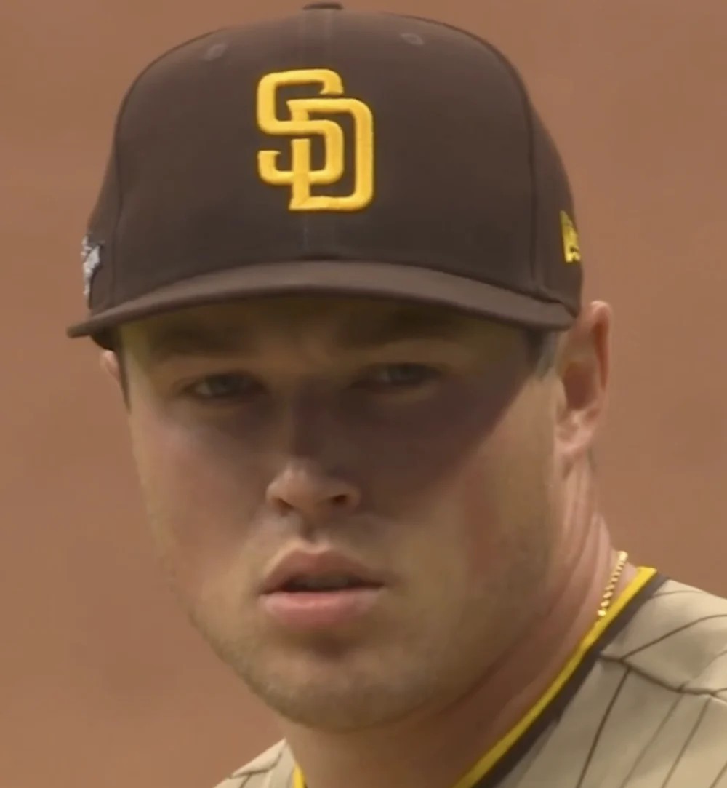

Our best, Chourio, against their top closer, Miller.
· American Family Field, Milwaukee · NLDS Game 2
SD 3MIL 2
Bottom of the 9th
2 outs
Bases loaded
Sunset at American Family Field



Walks to Yelich, Frelick, and Sánchez loaded the bases. With two outs, Chourio came up against Miller.
Watch the final pitch
The video could not load. Reload the page to try again, or open MLB’s official highlight.
Chourio’s six-pitch at-bat
He fouled off 103.5 mph, took the low slider, then singled on 101.3 mph.
Pitch 1 of 6
Count: 0–1
100.8mph
Four-seam fastball
Chourio swings and misses. Strike one.
SD3
MIL2
2 outs · Bases loaded
Step through the finish
Pitch speeds and sequence: MLB Gameday.
Chourio’s single won it, 4–3.
Christian Yelich scored the tying run, and Sal Frelick scored the winning run. Milwaukee took a 2–0 lead in the Division Series.
Final · October 4, 2026
San Diego3
Milwaukee4
Brewers lead the series 2–0